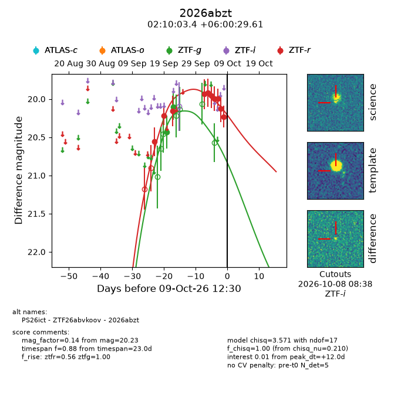
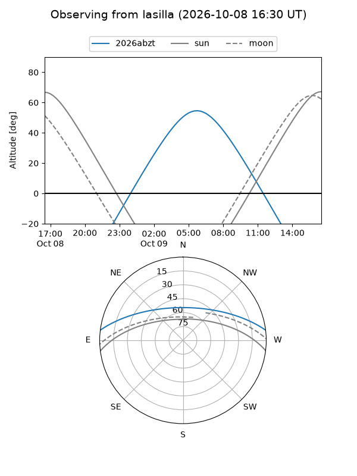
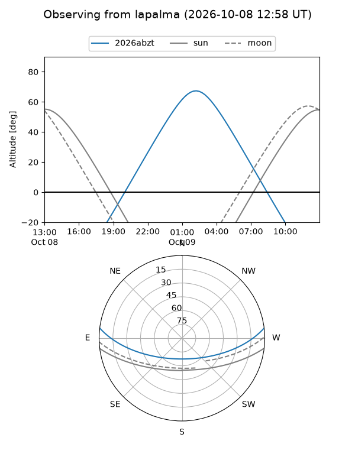
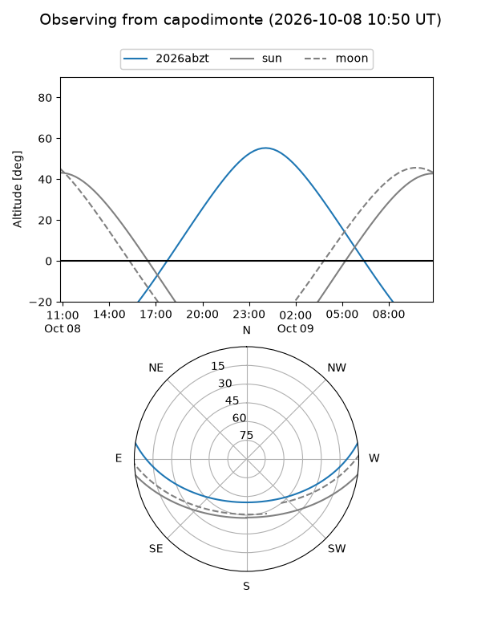
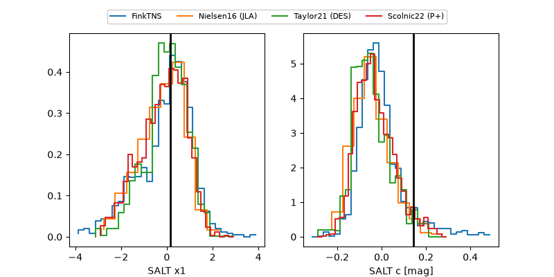

2026abzt
Target 2026abzt at 2026-10-09 12:32
Aliases and brokers:
FINK-ZTF: ztf.fink-portal.org/ZTF26abvkoov
Lasair-ZTF: lasair-ztf.lsst.ac.uk/objects/ZTF26abvkoov
ALeRCE-ZTF: alerce.online/object/ZTF26abvkoov
YSE-PZ: ziggy.ucolick.org/yse/transient_detail/2026abzt
TNS name: wis-tns.org/object/2026abzt
Direct TNS query: direct search
alt names
ZTF26abvkoov (ztf,fink_ztf)
2026abzt (tns,yse)
PS26ict (panstarrs)
Coordinates:
equatorial (ra, dec) = 32.5143,+6.00822
equatorial (HMS+DMS) = 02:10:03.43,+06:00:29.61
galactic (l, b) = (155.6735,-51.79487)
Flags:
peak dt: +12.0
Photometry:
last ztfg=20.10, ztfr=20.23
2 ztfg, 10 ztfr detections
Lightcurve

Visibility



Additional plots
